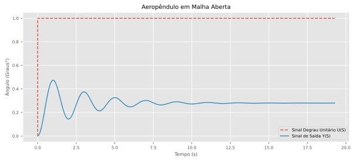
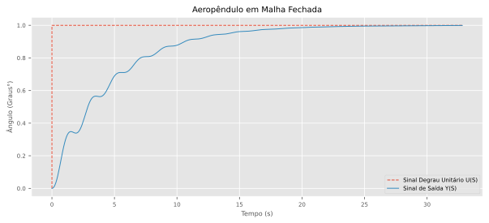

- Demostração Simulador
- Objetivo de Sistemas de Controle
- O que é o Aeropêndulo?
- Modelagem e Simulação Aeropêndulo
- Referências

Projeto: Laboratório Virtual de Sistema de Controle
Título:: Simulação Gráfica do Aeropêndulo com a Biblioteca VPython
Autor: Oséias Farias
Orientadores:
Prof. Dr: Raphael Teixeira
Prof. Dr: Rafael Bayma
Demostração Simulador
Objetivo de Sistemas de Controle
Sistemas de controle têm como objetivos modelar, controlar e regular o comportamento de um processo ou sistema físico. Ele é amplamente utilizado em diversas áreas, como engenharia, física, química e biologia, para garantir que o sistema ou processo seja mantido dentro de um determinado conjunto de parâmetros ou condições.
Figura 1 - Diagrama de blocos do Sistema em Malha Fechada.
Nas Engenharias, muito dos sistemas estudados são físicos, quando se modela matematicamente esses sistemas, fica complicado para o aluna assimilar o comportamento do sistema real a partir dos gráficos dos estados, por outro lado, a implementação de protótipos se torna um empecilho para o processo de aprendizagem, já que demanda conhecimento de outra áreas, além do custo na compra de componentes, sendo assim, a simulação gráfica desses sistemas usando liguagens de programação proporciona ao aluno uma excelente forma de visualizar o comportamento do sistema real sem custos de implementação já que as linguagens de programação são gratuitas.
Para a implementação da simulação gráfica do Aeropêndulo, foi usada a linguagem de programação Python com a biblioteca Vpython, a Figura 2 mostra o simulador.

Figura 2 - Animação do aeropêndulo usando a biblioteca vpython.
O que é o Aeropêndulo?
O aeropêndulo é um dispositivo utilizado em experimentos de física que combina os princípios de um pêndulo e da aerodinâmica. Ele consiste em uma haste suspensa por um ponto fixo em um suporte, com uma asa em uma das extremidades da haste.

Figura 3 - Aeropêndulo.
Quando o aeropêndulo é movido para um lado, a força da gravidade faz com que a haste comece a oscilar em torno do ponto de suspensão. A asa no final da haste também gera uma força aerodinâmica que pode afetar o movimento do pêndulo. A interação entre as forças gravitacionais e aerodinâmicas faz com que o aeropêndulo execute movimentos complexos e interessantes.
Modelagem e Simulação Aeropêndulo
Figura 4 - Diagrama esquemático do Aeropêndulo.
Usando as leis de Newton e momentos angulares podemos encontrar o modelo matemático que descreve a dinâmica do aeropêndulo, assim, temos a equação \(\bf(01)\) que modela o sistema em questão.
\[ \begin{align} T &= J\ddot{\theta} + c\dot{\theta} +mgd\sin{(\theta)} \tag{01} \end{align} \]
Queremos controlar o ângulo do braço do aeropêndulo a partir da tensão aplicada aos terminais do motor, assim,devemos encontrar uma relação entre a tensão \(\bf V\) nos terminais do motor e o empuxo \(\bf T\) gerado pela hélice, essa relação é não linear, porém é possível aproximar por uma relação linear, como mostra a expressão \(\bf(02)\).
\[ \begin{align} T &\approx K_mV \tag{02} \\ K_mV &= J\ddot{\theta} + c\dot{\theta} +mgd\sin{(\theta)} \tag{03} \end{align} \]
Figura 5 - Diagrama de blocos do modelo do Aeropêndulo.
\[ \begin{align} \dot{x_2} &= x_1 \tag{04} \\ \dot{x_1}J &= - x_1c - mgdsen(x_2) + VK_m \tag{05} \\ \dot{x_1} &= \dfrac{- x_1c - mgdsen(x_2) + VK_m}{J} \tag{06} \end{align} \]
Onde:
- T: Empuxo gerado pela hélice;
- J: Momento de inércia;
- θ: posição angular do Aeropêndulo;
- c: coeficiente de amortecimento viscoso;
- m: peso do Aeropêndulo;
- d: a distância entre o centro de massa e o ponto de pivô;
- V: Tensão de Entrada do Motor CC Série;
- Km: Relação entre o torque e a tensão;
- x1 e x2: Estados do Sistema;
Linearização do Sistema
Uma das técnicas de linearização quando se tem sistemas não lineares que a componente não linear é o seno ou cosseno é considerar o seno ou cosseno sendo o valor do próprio ângulo, isso funciona bem para pequenas variações em torno do ângulo, aplicando essa técnica ao modelo do aeropêndulo, temos a equação \(\bf(07)\).
\[ \begin{align} K_mV &= J\ddot{\theta} + c\dot{\theta} +mgd\theta \tag{07}\\ \end{align} \]
Aplicando a transformada de Laplace, temos:
\[ \begin{align} K_mV(s) &= s^2J\theta(s) + sc\theta(s) +mgd\theta(s) \tag{08}\\ K_mV(s) &= (s^2J + sc +mgd)\theta(s) \tag{09}\\ \frac{\theta(s)}{K_mV(s)} &= \frac{1}{s^2J + sc +mgd} \tag{10}\\ \frac{\theta(s)}{K_mV(s)} &= \frac{1/J}{s^2 + sc/J +mgd/J} \tag{11}\\ \frac{\theta(s)}{V(s)} &= \frac{K_m/J}{s^2 + sc/J +mgd/J} \tag{12} \end{align} \]
Sistema no Espaço de Estados
Forma Canônica de Controlador
\[ \begin{align} x_1&=\theta \quad x_2=\dot{\theta} \quad x_2 = \dot{x_1} \end{align} \]
\[ \begin{bmatrix} \dot{x}_1 \\ \dot{x}_2 \end{bmatrix}= \begin{bmatrix} 0 & 1\\ -\frac{mgd}{J} & -\frac{c}{J} \end{bmatrix}\cdot \begin{bmatrix} x_1 \\ x_2 \end{bmatrix}+ \begin{bmatrix} 0 \\ \frac{K_m}{J} \end{bmatrix}\cdot u \]
\[ Y= \begin{bmatrix} 1 & 0 \end{bmatrix} \cdot \begin{bmatrix} 0 \\ \frac{K_m}{J} \end{bmatrix} + 0 \]
Parâmetros para Simulação
Para simulação foi usado os parâmetros do artigo \(\bf[1]\).
\[ \begin{align} \begin{array}{|c|c|} \hline \text { Parâmetros do Aeropêndulo } & \text{Valores} \\ \hline K_m & 0,0296 \\ \hline d & 0,03m \\ \hline J & 0,0106 Kgm^2 \\ \hline m & 0,36 m \\ \hline g & 9,8 m/s^2 \\ \hline c & 0,0076 Nms/rad \\ \hline \end{array} \end{align} \]
Resposta ao degrau usando Python
Para realizar a simulação da resposta ao degrau foi usado Python com o auxílio das bibliotecas numpy, matplotlib e control, sendo que as bibliotecas numpy e matplotlib são usada para criar as matrizes A, B, C e D e plotar a resposta do do sistema, respectivamente, já a biblioteca control é usada para criar o sistema no espaço de estados e obter a função de transferência, além disso, é possível obter a resposta ao degrau usando a função step da biblioteca control, que recebe como parâmetro o sistema criado anteriormente, no espaço de estados ou função de transferência.
Importando as bibliotecas Python usadas
Variáveis com os parâmetros para simulação do modelo.
Matrizes NumPy do sistema no espaço de estados
A = np.array([[0, 1],
[-(m*g*d)/J, -(c/J)]])
B = np.array([[0, K_m/J]]).T
C = np.array([1, 0])
D = 0Sistema no Espaço de Estados
Para criar o sistema no espaço de estados, foi usado a biblioteca Python, control, essa biblioteca permite criar um sistema no espaço de estados a partir das matrizes A, B, C, D
Obtendo a Função de Transferência a partir do Espaço de Estados
Para obter a função de transferência a partir do sistema no espaço de estados, a biblioteca control implementa uma função, ct.ss2tf(sys), que recebe como parâmetro, o sistema no espaço de estados e retorna a função de transferência.
Informações do sistema em malha aberta
Antes de realizar a simulação em malha aberta, é interessante observar as características do sistema, para isso, a biblioteca control implementa algumas função.
Explicando as diferentes funções da biblioteca control
A função ct.step_info() recebe como parâmetro o sistema no espaço de estados ou uma função de transferência e retorna as características do sistema, para esse exemplo, ao aplicar a função ela retorna diversas características, exemplo:
- Tempo de acomodação -> ‘SettlingTime’: 10.308519357198815’
- Ultrapassagem Percentual -> ‘Overshoot’: 69.54106137593485,
- Tempo de Subida -> ‘RiseTime’: 0.396481513738416
saída:
{'RiseTime': 0.396481513738416,
'SettlingTime': 10.308519357198815,
'SettlingMin': 0.14343794449344063,
'SettlingMax': 0.47415111647086844,
'Overshoot': 69.54106137593485,
'Undershoot': 0,
'Peak': 0.47415111647086844,
'PeakTime': 1.0308519357198815,
'SteadyStateValue': 0.2796674225245654}A função ct.damp() recebe como argumento o sistema no espaço de estados ou a função de transferência e retorna os Autovalores, amortecimento e frequência natural para cada polo do sistema.
saída:
_____Eigenvalue______ Damping___ Frequency_
-0.3585 +3.139j 0.1135 3.16
-0.3585 -3.139j 0.1135 3.16A função ct.poles() recebe como argumento o sistema no espaço de estados ou a função de transferência e retorna os polos do sistema, para esse caso o sistema é de segunda ordem, pois possui dois pólos.
saída:
array([-0.35849057+3.13948884j, -0.35849057-3.13948884j])A função ct.zeros() recebe como argumento o sistema no espaço de estados ou a função de transferência e retorna os zeros do sistema. para esse caso o sistema não possui zeros.
saída:
array([], dtype=float64)Resposta ao degrau
t, yout = ct.step_response(Gs)
fig, ax = plt.subplots(figsize=(6, 3.5))
ax.set_title("Aeropêndulo em Malha Aberta")
ax.set_ylabel("Ângulo (Graus°)")
ax.set_xlabel("Tempo (s)")
ax.plot(t, np.rad2deg(yout))
plt.show()Saída:

Controlador projetado usando LGR com auxílio do Matlab
Para fins de teste foi projetado um controlador simples usando o matlab e encontrada a função de transferência com o auxílio da biblioteca Control, por fim foi obtida a equação de diferenças para implementar o controlador no simulador.
Figura 6 - Diagrama de blocos do Sistema em Malha Fechada.
Função de Transferência do Controlador
\[ \begin{align} C(s) &= \frac{0,2126s + 0,7893}{s} \tag{13} \end{align} \]
Função de Transferência do Controlador usando a biblioteca Control do Python
saída:
\[ \dfrac{0.2126 s + 0.7893}{s} \]
Simulação do Sistema em Malha Fechada
saída:
\[ \dfrac{0.5937s+2.204}{s^3 +0.717s^2+10.58s+2.204} \]
Resposta ao degrau unitário
t, yout = ct.step_response(Hs)
plt.rc('xtick', labelsize=7)
plt.rc('ytick', labelsize=7)
fig, ax = plt.subplots(figsize=(7, 4))
ax.set_title("Aeropêndulo em Malha Fechada", fontsize=10)
ax.set_ylabel("Ângulo (Graus°)", fontsize=8)
ax.set_xlabel("Tempo (s)", fontsize=8)
ax.plot([0, 0, t[-1]], [0, 1, 1], "--", lw=1,
label="Sinal Degrau Unitário U(S)")
ax.plot(t, yout, lw=1., label="Sinal de Saída Y(S)")
ax.legend(fontsize=7)
plt.show()saída:

Ao analisar o sistema com o controlador, temos que o sistema não possui erro em regime permanente e seu overshoot é zero, no entanto, para que esses requisitos fossem obtidos ouve um aumento no tempo de acomodação.
Função de Transferência Discreta C(z)
Para discretizar o sistema foi usado um período de amostragem de 0,01s.
\[ \dfrac{0.2165 z + 0.2087}{z-1} \quad dt = 0.01 \]
\[ \begin{align} C(z) &= \dfrac{0,2165z −0,2087}{z-1} \tag{14}\\ &= \dfrac{0,2165z −0,2087}{z-1} \cdot \dfrac{z^{-1}}{z^{-1}} \tag{15}\\ &= \dfrac{0,2165 − 0,2087z^{-1}}{1-z^{-1}} \tag{16}\\ \end{align} \]
Encontrando a equação de diferenças do controlador
\[ \begin{align} C(z) &= \dfrac{U(z)}{E(z)} \tag{20} \end{align} \]
onde:
\[ \begin{align} U(z) &= Z\{u[k]\} \tag{17}\\ E(z) &= Z\{e[k]\} \tag{18}\\ \dfrac{U(z)}{E(z)} &= \dfrac{0,2165 − 0,2087z^{-1}}{1-z^{-1}} \tag{19}\\ (1-z^{-1})U(z) &= (0,2165 − 0,2087z^{-1})E(z) \tag{20}\\ U(z)-z^{-1}U(z) &= 0,2165E(z) − 0,2087z^{-1}E(z) \tag{21}\\ Z^{-1}\{U(z)-z^{-1}U(z)\} &= Z^{-1}\{0,2165E(z) − 0,2087z^{-1}E(z)\} \tag{22}\\ u[k] − u[k − 1] &= 0,2165e[k] − 0,2087e[k − 1] \tag{23}\\ u[k] &= u[k − 1] + 0,2165e[k] − 0,2087e[k − 1] \tag{24} \end{align} \]
Agora é possível implementar uma classe python para o controlador a partir da equação de diferenças.
\[ \begin{align} u[k] &= u[k − 1] + 0,2165e[k] − 0,2087e[k − 1] \tag{25} \end{align} \]
com a função de diferenças encontrada, agora é possível implementa-la usando python e fecha a malha com o controlador para simular, essa lógica está implementada no simulador.
Referências
- [1.] JOB, Mila Mary; JOSE, P. Subha Hency. Modeling and control of mechatronic aeropendulum. In: 2015 International Conference on Innovations in Information, Embedded and Communication Systems (ICIIECS). IEEE, 2015. p. 1-5.
- [2.] Silva. Yago. Projeto, construção e controle de um aeropêndulo . Centro de Engenharia Elétrica e Informática, Departamento de Engenharia Elétrica e Informática, Universidade Federal de Campina Grande - UFCG, 2018.
- [3.] MOHAMMADBAGHERI, Amin; YAGHOOBI, Mahdi. A new approach to control a driven pendulum with PID method. In: 2011 UkSim 13th International Conference on Computer Modelling and Simulation. IEEE, 2011. p. 207-211.
- [4.] SILVA, Yago Luiz Monteiro et al. Projeto, construção e controle de um aeropêndulo. 2018.